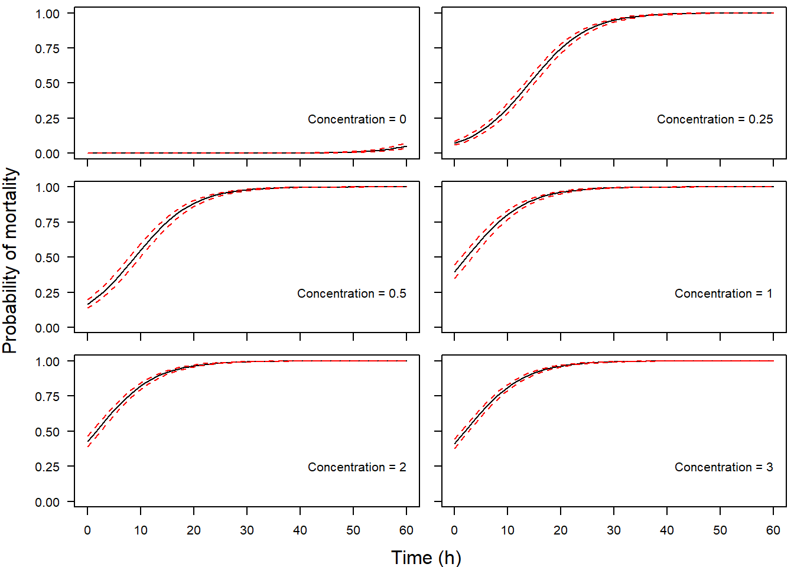

Generalized linear models: logistic regression

Introduction
This week in lab, we will start to take a closer look at generalized linear models (GLM) through the lens of logisitic regression. This is an family that includes multiple types of analyses depending on the data. For example, we might have binary data (0, 1), binomial data (number of success per some number of trials), or multinomial data (group membership as a response). We will look at the simplest of these cases, binary logistic regression, this week.
The data
For our exercise this week, we will work with a data set from a Biological Field Station intern project. The purpose of the project was to test the efficacy of Virkon as a molluscicide for dissinfecting equipment following exposure to zebra mussels Dreissena polymorpha. The study examined the effects of exposure time and concentration on mortality. The response in this data set is dead, a 1/0 variable indicating whether or not a zebra mussel was dead. Usually, with this kind of data, we use a 1 to indicate survival, but it seemed like too much fun to pass up the opportunity to model mortality as a success. So, for this data set a 1 indicates dead.
Start by reading in the data.
This data set contains a pile of variables, which of course makes it very fun to play with. We will work with some, but not all, of these variable this week for lab.
Explanations of variables are as follows:
Date: calendar date for start of each lab test
Location: the location in Otsego Lake, NY from which mussels were collected
SolnAge: the age of the Virkon solution
Concentration: concentration of Virkon in solution
Time: exposure time
We will treat concentration as a categorical variable because we only have a few different concentrations, although the argument could be made either way.
The remaining variables are physical and chemical parameters of water measured either in Otsego Lake, or in the Virkon solution. We will come back to these.
Exercises
A worked example
Let’s start with a simple example to get you moving along. First, we are interested in determining the effects of Concentration and Time on the probability of zebra mussel death (dead) following exposure. If you have been following closely during the past few weeks, you will recognize that with a categorical variable (Concentration) and a continuous variable (Time) we are looking at something that should resemble ANCOVA to you. But, our response, dead, can only take on values of 0 and 1, so we know that we need to use a GLM to accommodate this.
Analysis
To fit this model we will use the glm function in R, being sure to specify family = 'binomial' in our call:
Cool, that was easy!
Results
Let’s have a look at what the model tells us about our biological questions of interest now. Remember, we need to work with the Anova() function in the car package to use the correct calculations because we have continuous and categorical variables. The only difference is that we are now using an analysis of deviance to summarize significance, which requires the use of a Type-II test instead of a Type-III test.
# Load the car library so we can get a
# meaningful ANOVA table for our model
library(car)
# Print the summary of the model
Anova(v.mod, Type='II')
Analysis of Deviance Table (Type II tests)
Response: dead
LR Chisq Df Pr(>Chisq)
Concentration 8885.8 5 < 2.2e-16 ***
Time 4501.7 1 < 2.2e-16 ***
---
Signif. codes: 0 '***' 0.001 '**' 0.01 '*' 0.05 '.' 0.1 ' ' 1Question 1. At the default confidence level (\(\alpha\) = 0.05), what can you determine about effects of Concentration and Time with respect to statistical significance? Answer in sentence form, stating the null hypotheses and supporting statistics.
Just as with all of our other models, we can use the summary() function to get the output from R.
# Print the summary of the model
summary(v.mod)
Call:
glm(formula = dead ~ Concentration + Time, family = "binomial",
data = vd)
Deviance Residuals:
Min 1Q Median 3Q Max
-4.3208 -0.0218 0.0214 0.2047 5.0817
Coefficients:
Estimate Std. Error z value Pr(>|z|)
(Intercept) -13.825053 0.355912 -38.84 <2e-16 ***
Concentration0.25 11.252573 0.311103 36.17 <2e-16 ***
Concentration0.5 12.201641 0.325214 37.52 <2e-16 ***
Concentration1 13.407026 0.344278 38.94 <2e-16 ***
Concentration2 13.527866 0.342963 39.44 <2e-16 ***
Concentration3 13.464877 0.345367 38.99 <2e-16 ***
Time 0.182631 0.005109 35.75 <2e-16 ***
---
Signif. codes: 0 '***' 0.001 '**' 0.01 '*' 0.05 '.' 0.1 ' ' 1
(Dispersion parameter for binomial family taken to be 1)
Null deviance: 15731.0 on 12108 degrees of freedom
Residual deviance: 4989.6 on 12102 degrees of freedom
AIC: 5003.6
Number of Fisher Scoring iterations: 8The summary of the model gives us the estimated coefficients on the logit scale, along with our usual significance codes and an AIC score (now in the default output because we are using maximum likelihood estimation).
Even though these parameters are on the logit scale, we can still make limited inference about the directionality of relationships as we would with linear models used earlier in the semester.
Question 2. What, if any, is the direction of the relationship between Time and zebra mussel mortality?
Question 3. What is the general trend in mortality with the different concentrations listed in the summary of vmod? This may take a little thought, but remember that even as categorical variables, factor levels are listed alphanumerically in the output. If Concentration == 0 (“control”) is in the intercept, then the remaining coefficients are directly comparable.
One thing that you’ll notice is missing from this output is the R2 value that we have become familiar with during the past several weeks while working with linear models. There is no R2 value because we are no longer estimating these models using ordinary least squares, but rather maximum likelihood estimation. If we wanted to get an analagous metric of variance explained by our model, we could estimate a pseudo-R2. There are many of these available depending on the model and nature of our data. The simplest, and arguably most common is the McFadden R2. To estimate this one, we compare the deviance of our model to the deviance of an intercept-only (i.e. “null”) model using the output from the summary function above:
\[McFadden R^2 = 1 - \frac{Deviance_{residual}}{Deviance_{null}}\]
In R, the residual deviance is stored in v.mod$deviance and the null deviance is stored in v.mod$null.deviance. So,
\[R^2 = 1 - \frac{4989.599}{1.5731041\times 10^{4}} = ?\]
Question 4. How much of the variation in zebra mussel mortality is explained by the additive effects of Concentration and Time?
Now that we have a feel for just how much variability this model explains, the next step in reporting our results here is to extract some information about how dead changes with Time beyond simply stating that it was either “inversely” or “proportionally” related to Time. We will include Concentration in our predictions to account for changes between doses.
Recall that we can make predictions from our model either by hand or by using the predict function in R. Note that if we use the predict function for glm objects in R, we no longer have the ability to set the interval argument as we did for objects resulting from the lm() function (well, we can- it will just be ignored). But, we can get standard error estimates if we make predictions on the link scale. Therefore, if we want confidence intervals on our predictions, we will need to do it by hand (well, in the computer).
Start by making some new data that we can use for predictions. Recall from lecture module 6 that this gets a little more complicated when we have multiple explanatory variables. The predict function requires a data.frame with names that match the names of explanatory variables from our original data set, vd.
# Start with Time by making a sequence from the minimum
# observed Time to the maximum observed Time in equal
# increments of 1 hour
Time = seq(from=min(vd$Time), to=max(vd$Time), by=1)
# Now, make a column for each Concentration that is the same length
Concentration = rep(unique(vd$Concentration), length(Time))
# Now, duplicate the Time column so it is repeated
# for all Concentrationes
Time = rep(Time, length(unique(Concentration)))
# Put it all together in a dataframe
newD = data.frame(Concentration, Time)
newD = newD[with(newD, order(Concentration, Time)), ]Now that we have new data for making predictions, let’s go ahead and do it!
# Calculate mean predicted value and SE for the predictions
# on the link scale
preds = data.frame(
predict(v.mod, newD, type='link', se.fit = TRUE)[1:2]
)
# Now get lower and upper CIs
preds$lwr = preds$fit + preds$se.fit*qnorm(0.025)
preds$upr = preds$fit + preds$se.fit*qnorm(0.975)Now, we need to define a function to invert the logit link function if we want to get our predictions back on the probability scale (and we do).
Now we can convert our predictions to the probability scale. Here, we loop over columns 1, 3, and 4 of our preds dataframe using the apply function because the second column is just the standard errors for our predicted fit at each point. This gives us mean and 95% CI on the probability scale.
# Convert the predictions to the probability scale
preds[ , c(1,3,4)] = apply(X=preds[ , c(1,3,4)],
MARGIN=2,
FUN=inv.logit
)
# Add our new data to the dataframe
preds = data.frame(preds, newD)Finally, let’s plot our predictions. Note that we do not plot our raw data here because it is a huge number of ones and zeros that do not lend themselves to visual interpretation (I tried), but this is generally good practice. We could go through and plot these one at a time (see lecture content), but here I will demonstrate how one might do this using a loop, followed by a number of conditionals for axis labeling. All in the name of gross overkill (oh, wait, I mean responsive programming and data visualization!).
# Plot the predictions
# Set graphical parameters
par(mfrow=c(3,2), oma=c(3,4,0,0), mar=c(1,1,.5,.5))
# Loop over the different doses to plot probability
# of mortality by exposure time
for(i in 1:length(unique(preds$Concentration))){
# Plot the mean
plot(y=preds$fit[preds$Concentration==unique(preds$Concentration)[i]],
x=preds$Time[preds$Concentration==unique(preds$Concentration)[i]],
col=c('black'),
type='l',
lty=1, lwd=1,
ylim=c(0, 1),
ylab = '',
xlab = '',
yaxt='n', xaxt='n'
)
# Lower 95% CI
lines(preds$lwr[preds$Concentration==unique(preds$Concentration)[i]],
x=preds$Time[preds$Concentration==unique(preds$Concentration)[i]],
col='red', lty=2)
# Upper 95% CI
lines(preds$upr[preds$Concentration==unique(preds$Concentration)[i]],
x=preds$Time[preds$Concentration==unique(preds$Concentration)[i]],
col='red', lty=2)
# Add the name of the metric to the plots
text(x = 60, y = 0.25,
labels = paste("Concentration =", unique(preds$Concentration)[i]),
adj = 1)
# Add x(side=1) and y (side=2) tick marks to all plots
axis(side = 1, labels = FALSE, tick = TRUE)
axis(side = 2, at = seq(0, 1, 0.25),
labels = FALSE, tick = TRUE)
# Add x-axis tick labels only if plot 11 or 12
if((i==5) || (i==6)){
axis(side = 1, at = seq(0, round(max(preds$Time)), 10),
labels = seq(0, round(max(preds$Time)), 10))
}
# Add y-axis tick labels only if plot number is even
if((i %% 2) != 0) {
axis(side = 2, at = seq(0, 1, 0.25),
labels = format(seq(0, 1, 0.25),digits = 2), las=2)
}
}
# Add x and y-axis labels to the plot
mtext(text="Probability of mortality",
side=2, line=2.75, cex=1,
adj=.5, outer=TRUE
)
mtext(text="Time (h)",
side=1, line=2, cex=1,
adj=.5, outer=TRUE)
Using either the graph or the estimates in the fit column of preds, we can estimate about how much dead changes across the range of Time observed. We can report this by Time to convey more information.
Question 5. Use the graph you have created, along with the model results to describe how zebra mussel mortality changed with Concentration and Time.
If you have been paying close attention this semester, you may be wondering why we don’t fit an interaction that would allow the effect of exposure time to vary across Concentration, and indeed that is a fair question. Unfortunately, the degree of mortality that results after short exposure to the higher concentrations is so high that variance estimation in the model becomes unstable and we predict confidence intervals from zero to one (despite increasing the R2 to 0.94 and producing much more intuitive curves).
This work is licensed under a Creative Commons Attribution 4.0 International License. Data are provided for educational purposes only unless otherwise noted.